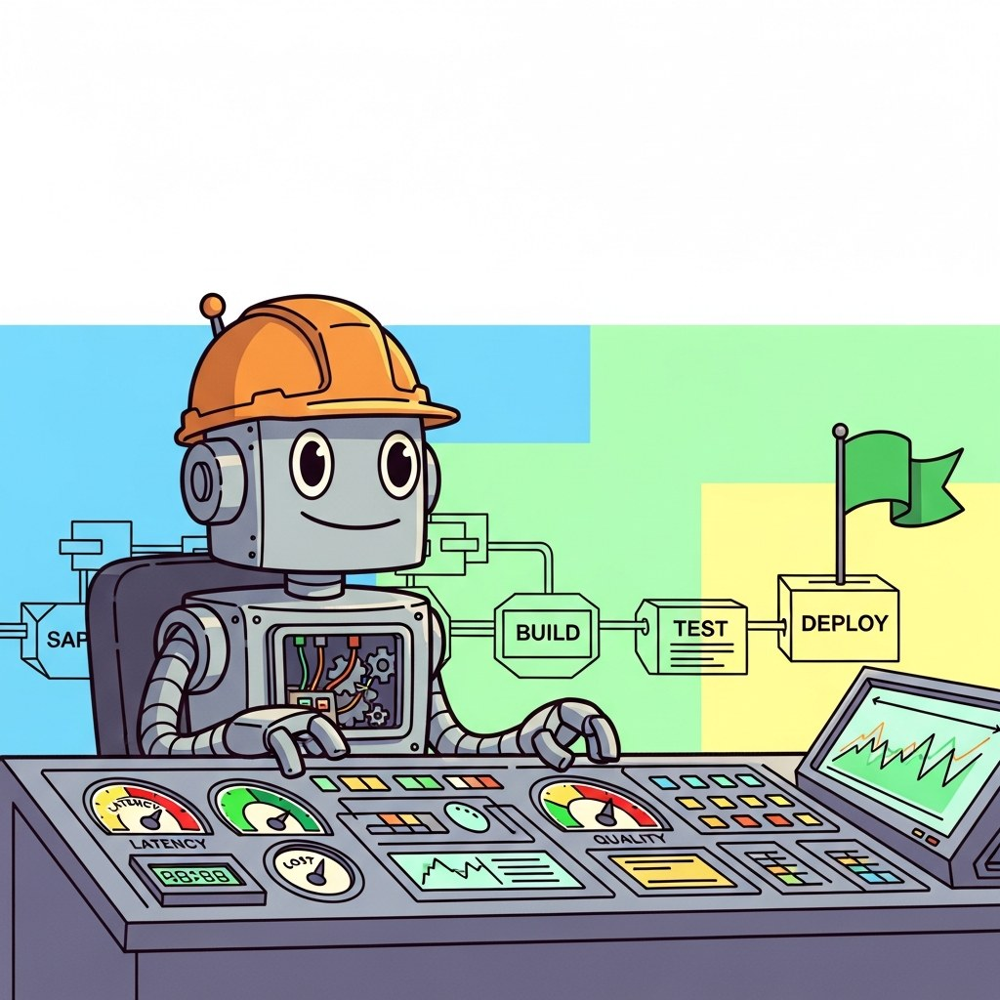

Big Picture
Infrastructure-heavy engineering for LLM systems: scaling, AI gateways, workflow orchestration, edge deployment, reliability, and Kubernetes-native operations.
Sections
- 62.1 Scaling, Performance & Production Guardrails Production LLM systems must handle unpredictable traffic while ensuring every response is safe.
- 62.2 LLMOps & Continuous Improvement LLMOps extends MLOps with practices specific to language model applications.
What's Next?
This chapter begins with Section 62.1: Scaling, Performance & Production Guardrails. Each section builds on the previous one, so we recommend reading them in order.